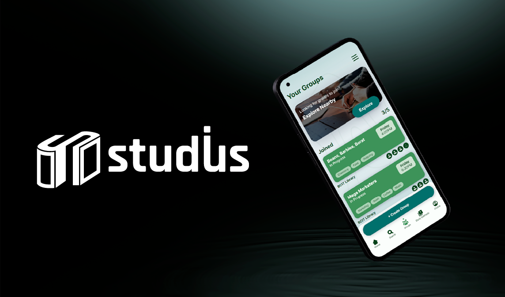

studiUs

studiUs is a study helper app designed for college students. It features a self-assessment quiz to help users find their ideal study method(s), and a study group system that can assist users with finding study buddies.
Description
Academic project done in teams of 3. We were to ideate, design, test, and develop a mobile-focused web app over the course of several months. Within the team I took a lead role in the development process, while contributing meaningfully to ideas and design. This is a frontend development project, so features that would need a database (ex: profile & real study group storage) were not implemented.
Our process went as follows: We started with our idea, created user personas, created a site map/content inventory, created & iterated on lo-fi prototypes, created & iterated on hi-fi prototypes, performed usability testing, then moved into the development phase.
Tools/Software Used:
- Adobe Photoshop & Illustrator
- Figma
- Next.js
- Git
Takeaways
Successes
- Implemented all frontend interactions
- Professional visuals and layouts
- Made meaningful changes based on user feedback
- Effective delegation of work based on team members' strengths
Challenges
- Project scope
- Timeline management
From this project I learned a lot about interaction design & theory, and getting used to tools such as Figma and developing in Javascript with the Next.js framework. We originally had very ambitious ideas for our app, and we had to redefine our scope due to our timeline and abilities. As a result we cut out many things that we would have loved to have added. There is a chance that we may add them for a future project.